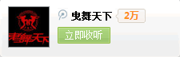

|
| 首页 | AUS风格 | MAS风格 | 硬派风格 | mjn风格 |
| 新手教学 | 高手视频 | 曳舞名人堂 | 舞曲试听 | |
| 会员注册 | 会员登入 | 曳舞文章 | 中国各地QQ群 |
|  |
|

.jpg) |
在中国的发展过程：2004年左右shuffle开始流传到中国，2009年在山东中华达人播放了中国第一次曳舞节目，这是曳舞首先出现在中国的主流媒体上。以及2010年出现了由北京小坏组织的BJS、安徽L组织的游小步等等一些地方性组织，还有陕西的王佳宾.杨牧林.李佰伦等人打造的Top*曳步舞组织。到2011年全国基本出现了各地区组织和舞团，并且各舞团都在飞速发展。目前曳舞的发展模式都是以网络作为载体，舞团主要以优酷视频、QQ群和曳舞基地网站等壮大自己的队伍，百度贴吧等曳舞学习交流平台也促进了曳舞的发展和舞团的壮大。 |
| 曳步止 | 特点： 墨尔本曳步舞也包含了身体整体性的控制，这种舞蹈至今发展出了一套全新的舞蹈风格，到目前还在不断的发展中。曳步舞注重脚步动作，所以在服装方面特别讲究裤子的部分（曳步舞者的裤子类似喇叭裤，裤子旁边都缝上一些在灯光下会反射的荧光饰物。 |